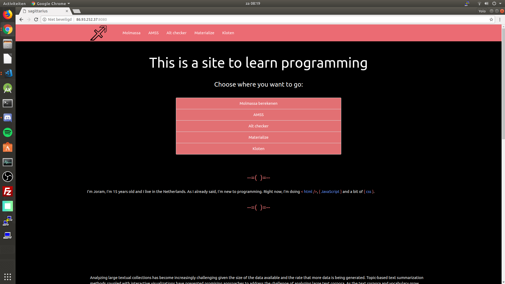
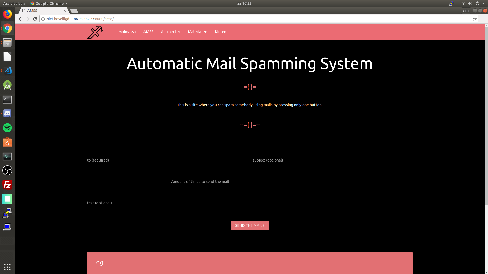
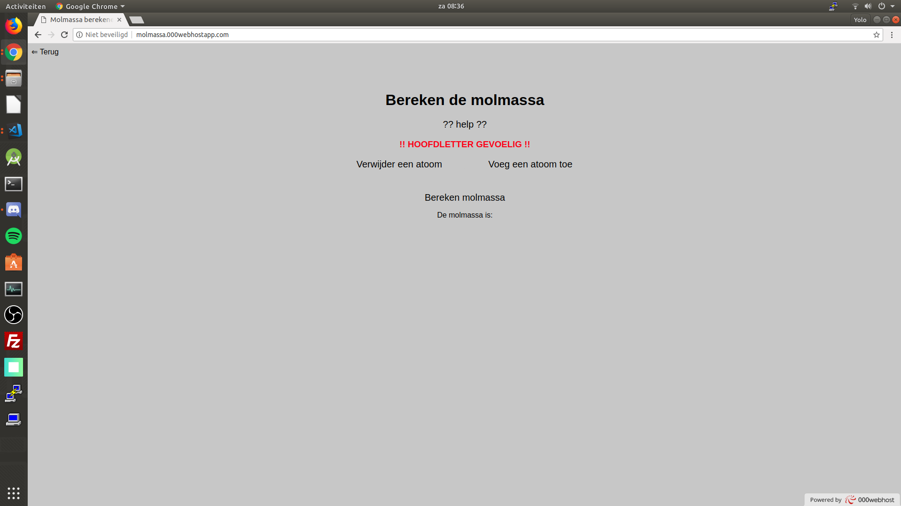

Hieronder heb ik al mijn projecten uitgestald. Het heeft me een tijdje gekost om ze allemaal weer naar boven te halen, maar het is me uiteindelijk gelukt. Het zijn er redelijk wat, dus ga er goed voor zitten en neem de tijd om het allemaal door te lezen en ze allemaal goed te bekijken.
Eerste website
De homepage van mijn eerste site

Dit is hem, mijn eerste kotslelijke website. Het is een website waar je eigenlijk allemaal nutteloze dingen kunt vinden, die je hieronder waarschijnlijk ook nog wel tegenkomt. Ik heb het design van de website gemaakt door middel van een framework, genaamd Materialize.
De hele site is zwart met een roze achtige kleur, wat ik er nu echt niet meer mooi uit vind zien. Waar ik nu al helemaal niet meer tegen kan, is die roze box in het midden van de landingpage. Het is té vel en trekt gelijk de aandacht van de rest van de pagina af, omdat de box zo opvalt. Ook ging ik te ver met alle kleurtjes enzo, wat je kan zien in aan de < html />, { javascript } en { css } in de tekst onder de te velle box. Verder had je onderaan de pagina nog een footer, ook weer vel roze, wat gewoon zeer deed aan je ogen, want hij was ongeveer de helft van je scherm hoog.
Tweede site
De landingpage van de tweede site

Zoals je kan zien, begint het gelijk weer goed. Het heeft nog steeds die kotslelijke roze kleur. Verder is de naam ook een beetje beschamend, want het slaat eigenlijk nergens op.
De bedoeling van de Automatic Mail Spamming System (AMSS) was dat je een emailadres, onderwerp, bericht en het aantal keer dat de mail verzonden moest worden invulde en dan werdt de mail het opgegeven aantal keren verstuurd. Veel heb je er niet aan, maar het was meer om te kijken hoe ik kon communiceren tussen server en client (ik gebruikte NodeJS en Socket.IO). Om de mailtjes te versturen gebruikte ik Nodemailer, een module voor NodeJS. Serverside had ik een loop, met een delay van 2000 miliseconden (ms). Dat betekend dat iedere twee seconden, 1 mail wordt verzonden. Dit gaat zo sloom omdat Gmail een beveiliging heeft. Wanneer ik mails verstuurde met een delay van ongeveer 10ms kreeg ik na ongeveer 90 mailtjes verstuurd te hebben een error dat de mail niet meer verzonden kon worden, waarschijnlijk omdat ik er te veel achter elkaar stuurde. Maar omdat het zo sloom moest, gaat mensen vol spammen dus ook slomer. Als je 1000 mailtjes wilde versturen, moets je iets langen wachten dan een half uur en dit is natuurlijk veels te lang, dus ik heb het systeem nooit meer gebruikt.
Molmassa site
De homepage van de molmassa site

Dit was één van de eerste site's waar ik JavaScript heb gebruikt. Het is een site om de molmassa van één of meerdere moleculen te berekenen. Ik had het idee om dit te maken toen we met scheikunde op school de molmassa van moleculen en dergelijke moesten berekenen, maar ik was te lui om ze op te zoeken in het periodiek systeem der elementen, dus kwam ik op het idee om deze site te maken. De meeste dingen heb ik niet zeld gedaan, maar een vriend, want ik vroeg steeds aan hem Hoe moet ik dit doen?
en dan kwam hij met een oplossing. Uiteindelijk heb ik er wel wat van geleerd, ookal heb ik niet alles zelf gedaan. Ik heb de site eigenlijk ook nooit gebruikt.
De site werkt als volgt: je hebt drie knoppen;
- Een knop met
Voeg een atoom toe
- Een knop met
Verwijder een atoom
- Een knop met
Bereken molmassa
Wanneer je op de knop Voeg een atoom toe
drukt krijg je twee extra input's waar je een atoom en zijn aantal in kan vullen. Als je dan op de Verwijder een atoom
knop drukt, verwijder je de onderste atoom. Wanneer je uiteindelijk op de Bereken molmassa
knop drukt, wordt de molmassa van de opgegeven atomen berekend.
Als je de site wilt bekijken en eventueel uitproberen, klik dan hier.